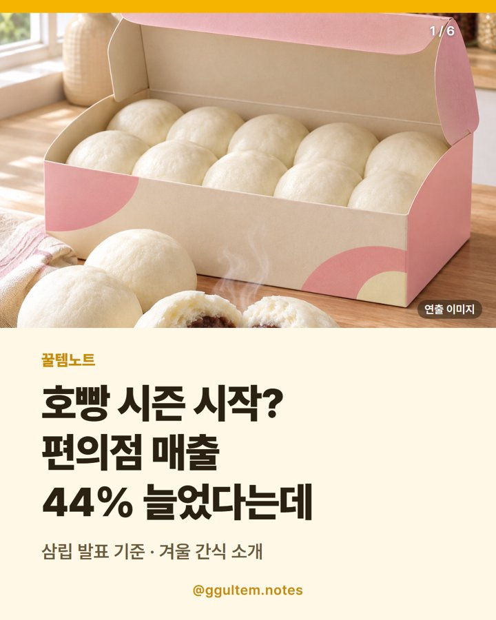

삼립 단팥호빵 10봉 — 보관·조리 확인법과 호빵 매출 44% 증가(삼립 발표)
2026.11.09 작성 · 꿀템노트
삼립 단팥호빵은 봉지 수와 총 중량, 보관 방법과 소비기한, 조리 방법 표기를 확인하고 고르면 돼요.

이미지는 이해를 돕기 위한 일러스트이며 실제 상품과 다를 수 있어요.
왜 화제가 됐을까
뉴스드림 기사에 따르면 삼립은 올겨울 삼립호빵 판매 첫 3주간 편의점 채널 매출이 전년 같은 기간보다 약 44% 늘었고, 전 채널 합산으로는 약 20% 늘었다고 밝혔어요. 광고 영상 누적 조회수가 200만 회를 넘었다는 설명도 함께 전했어요.
이 수치는 삼립 측 발표를 바탕으로 한 기사 내용이에요. 이 글에서 소개하는 상품은 기사 속 삼립호빵과 같은 브랜드의 단팥호빵이며, 기사가 특정 맛을 언급한 것은 아니에요.
삼립 단팥호빵 고를 때 무엇을 확인할까?
| 확인 항목 | 어디서 볼까 | 참고 |
|---|---|---|
| 구성 | 상품명·상세 정보 | 봉지 수와 총 중량(g)을 확인하세요. 이 상품은 10봉, 900g 구성으로 표기돼 있어요. |
| 보관 | 포장지·상세 정보 | 냉동·냉장 등 보관 방법을 확인하세요. |
| 소비기한 | 포장지 표기 | 수령 후 남은 기간을 확인하고 먹을 계획에 맞게 보관하세요. |
| 조리 | 포장지 조리 안내 | 찜기·전자레인지 등 조리 방법 표기를 확인하세요. |
삼립호빵은 찜기와 전자레인지 중 어떻게 데울까?
조리 방법과 시간은 제품마다 다르게 안내될 수 있어서 포장지 표기를 그대로 따르는 것이 가장 정확해요. 찜기가 없는 집이라면 전자레인지 조리 안내가 표기돼 있는지 먼저 확인해 보세요. 이 글은 조리 시간을 따로 안내하지 않아요.
호빵 가격은 어떻게 비교할까?
총 중량과 봉지 수가 다른 상품이 많아서 판매가만 보지 말고 봉지당 가격을 계산해 비교하면 좋아요. 이 글의 가격은 게시일 기준이며 변동될 수 있으니 쿠팡 상품 페이지에서 다시 확인하세요.
어떤 사람에게 맞을까?
겨울 간식으로 단팥호빵을 여러 개 쟁여 두려는 사람이 비교 대상으로 볼 만해요. 다만 맛과 품질은 사람마다 다르고, 이 글은 맛이나 품질을 보증하지 않아요. 선물용이라면 받는 사람이 찜기나 전자레인지를 쓸 수 있는지도 먼저 생각해 보세요.
이번에 소개하는 상품
삼립 단팥호빵 10봉, 900g, 1개
상품명에 표기된 특징은 단팥, 10봉, 900g 구성이에요. 맛이나 품질을 보증하는 내용은 아니에요.
자주 묻는 질문
삼립호빵 찜기가 없어도 데울 수 있나요?
포장지에 전자레인지 조리 안내가 있는지 확인하세요. 조리 방법과 시간은 제품 표기를 따르는 것이 가장 정확해요.
삼립호빵은 전자레인지로 해도 되나요?
제품 포장지의 조리 안내를 확인하세요. 이 글은 조리 시간을 따로 안내하지 않아요.
단팥호빵 소비기한은 어디서 확인하나요?
포장지에 표기된 소비기한을 확인하세요. 보관 방법에 따라 달라질 수 있으니 보관 표기도 함께 보세요.
삼립호빵 가격은 얼마인가요?
이 글에서 소개한 10봉(900g) 상품은 2026.11.09 기준 10,500원이에요. 가격은 변동될 수 있으니 상품 페이지에서 다시 확인하세요.